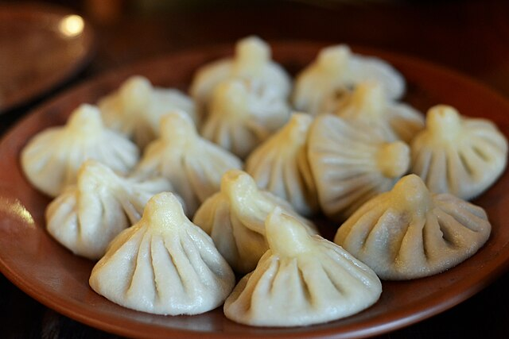

Khinkali Recipe

In Georgian cuisine, khinkali is a kind of dumpling made of twisted knobs of dough, stuffed with spiced meat or vegetables. Khinkali originate in the mountainous regions of eastern Georgia.
Khinkali originate in the mountainous regions of eastern Georgia. The invention of the dish is credited to the Mokheves, as well as the Pshavs, Mtiuls, and Khevsurs. Traditionally, khinkali are made with coarsely chopped meat. In the mountain areas, this method of preparation is still used.
Khinkali is eaten plain or with ground black pepper. The meat filling is uncooked when khinkali is assembled, so when it is cooked, the juices of the meat are trapped inside the dumpling. To make khinkali juicier, usually warm water or broth is added to the minced meat. Khinkali is typically consumed first by sucking the juices while taking the first bite, similar to xiaolongbao, in order to prevent the dumpling from bursting. The top, where the pleats meet, is tough, and is not supposed to be eaten, but discarded to the plate so that those eating can count how many they have consumed.
Ingredients:
- 500g flour
- 250ml water
- 1 tsp salt
- 300g ground beef or pork
- 1 onion, finely chopped
- 2 cloves garlic, minced
- 1 tsp ground cumin
- 1 tsp ground coriander
- Salt and pepper to taste
Steps:
- Mix flour, salt, and 1 1⁄4 cups (300 ml) of warm water in a bowl to make a dough. Knead on a work surface until smooth, roughly 6 minutes, then wrap in plastic and chill for 40 minutes.
- To make the filling, blend beef, pork, cilantro, fenugreek, chile flakes, and onions in a separate bowl. Season well with salt and pepper and set aside.
- Split the dough into 25 balls. Roll each ball into a 6-inch/15 cm circle.
- Place 2 tablespoons of filling in the center, then form a pouch by pleating the outer sides of the dough (aim for 19 pleats!). Twist the top to seal, then pinch off the excess dough at the top of the seal. Repeat until you've made all 25 dumplings.
- Boil a large pot of salted water and cook the dumplings in batches until they float and the dough is tender about 8 minutes.
- Drain, serve hot, and season with black pepper.
Home